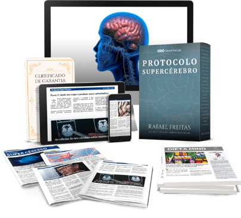

Depois dos 60 anos, seu cérebro
pode encolher 1% a cada ano
Então, surgem os
"apagões de memória"...
O perigo, é que essas
falhas
de memória
podem esconder
uma doença devastadora
e FATAL...
O Alzheimer.
Por isso o Dr. Rafael revela
pela primeira vez uma
receita secreta
para reverter
a perda de memória...
Trata-se de uma
"Pílula
da inteligência"
projetada
especificamente para ajudar a:
- Turbinar sua memória...
- Aumentar o poder cerebral...
-
E recuperar a mente "jovem"
dos seus vinte e poucos anos.
Segundo a FOX TV,
essa
chamada
"pílula da inteligência"
...
"Deixa sua mente veloz como
um caça supersônico"
Aviso
Importante:
Esta chamada "pílula da inteligência"
para senhoras e senhoras não está à
venda... e não pode ser encontrada na
farmácia, nem na internet.
Apesar de ser totalmente legal, 100%
segura, natural e sem efeitos
colaterais...
Existe apenas uma única forma de
você usufruir dos efeitos desta pílula.
É você mesmo produzi-la.
O Dr. Rafael desenvolveu
o Protocolo Supercérebro onde
ensina o passo a passo de como
Você mesmo produzir
a "Pílula da inteligência".
Está tudo aqui:
Protocolo
"Supercérebro"

Adicione este programa ao seu
pedido e receba,
em menos
de 2 minutos, no seu e-mail:
O "Relatório Pílula
da inteligência":
Com o passo a passo simples
e completo
de como você
mesmo produzir facilmente
o seu lote de "Pílulas da
Inteligência"
que despertam
o poder do seu cérebro...
Você ainda recebe...
-

A Dieta Mind:
Um cardápio para turbinar
o cérebro e blindar você contra
o mal degenerativo
do Alzheimer; -
Publicações Quinzenais
(24 edições):
A cada 15 dias você recebe
no seu e-mail novas atualizações
sobre a saúde do cérebro:
para ampliar sua
capacidade de memória,
atenção e inteligência.
Com este protocolo
você pode:
-
Aumentar o foco em 80%
para ficar ligado durante as
conversas... concentrado enquanto
lê o jornal... e até enquanto dirige -
Ampliar sua capacidade
de realizar várias tarefas
ao mesmo tempo em até 73%
e também concluir tarefas
com mais facilidade... -
Banir os temidos apagões
e dar FIM ao "Deu Branco"
para dar um basta em esquecer
nomes, travar no meio da frase...
ou tropeçar, tentando encontrar
a palavra certa que fugiu
da mente... -
Afastar a Névoa de Sonolência
e Lentidão do Cérebro
para não parecer "zumbi". Ao invés
disso, sinta-se mentalmente
"conectado", ligado da hora que
acorda até antes de escovar
os dentes pra dormir
Protocolo
"Supercérebro"
Escrito em portugês simples
com informações faceis de seguir
Adicione este programa ao seu
pedido e receba,
em menos
de 2 minutos, no seu e-mail:
-
Um relatório
com o passo a
passo simples e completo de
como produzir facilmente a
"Pílula da Inteligência" que
desperta o poder do seu
cérebro... -
A Dieta Mind
um cardápio
para turbinar o cérebro e
blindar você contra o mal
degenerativo do Alzheimer; -
Receba a cada 15 dias no
seu e-mail novas atualizações
sobre a saúde do cérebro;
para ampliar sua capacidade
de memória, atenção
e inteligência.
Agora você tem uma
chance real de salvar
suas memórias e turbinar
o seu cérebro
Normalmente este protocolo
é vendido a:
R$ 399,60
... e sabemos que é um investimento
justo, por um material rico
em informações
cientificamente estudadas...
Mas acreditamos que essa
informação seja tão valiosa...
e tão URGENTE,
Que desejamos que todos tenham
acesso a esse programa
Então, estamos oferecendo
para você uma CONDIÇÃO
ESPECIAL por apenas:
12x de: R$ 16,65
Esta Oferta termina em:
Horas
Minutos
Segundos
Protocolo
"Supercérebro"
Escrito em portugês simples
com informações faceis de seguir
Adicione este programa ao seu
pedido e receba,
em menos
de 2 minutos, no seu e-mail:
-
Um relatório
com o passo a
passo simples e completo de
como produzir facilmente a
"Pílula da Inteligência" que
desperta o poder do seu
cérebro... -
A Dieta Mind
um cardápio
para turbinar o cérebro e
blindar você contra o mal
degenerativo do Alzheimer; -
Receba a cada 15 dias no
seu e-mail novas atualizações
sobre a saúde do cérebro;
para ampliar sua capacidade
de memória, atenção
e inteligência.
Obtenha todos
os detalhes
para combater
os apagões de
memória
Isso inclui:
-
O Relatório Pílula da
Inteligência, onde você vai
descobrir como preparar a sua
própria pílula para reverter a
perda de memória:
• O composto ALPHA - uma planta
sul-africana que aumenta o poder
do seu cérebro e ajuda você a ficar
alerta e concentrado o dia todo...
o composto BETA - o neuro-
impulsionador que ajuda a proteger
sua mente e a formar novas
memórias... e o COMPOSTO GAMA -
que "turbina" sua memória
• Você vai descobrir ainda outros
7 ingredientes misteriosos presentes
nesta fórmula
• E mais importante, a quantidade
exata de miligramas... e a
combinação certa a se fazer
com eles. -
A Dieta Mind
um cardápio para
turbinar o cérebro e blindar você
contra o mal degenerativo
do Alzheimer; -
Publicações quinzenais
(24 edições) a cada 15 dias
você recebe no seu e-mail novas
atualizações sobre a saúde
do cérebro; para ampliar sua
capacidade de memória, atenção
e inteligência.
Protocolo
"Supercérebro"
Escrito em portugês simples
com informações faceis de seguir
Para tornar essa
decisão mais
fácil, estamos
oferecendo uma
compra livre
de riscos...
Acima de tudo, sua
satisfação está garantida!
Aproveite sua
garantia de
30 dias
Dentro desse período, se você
decidir, por qualquer motivo, que o
Protocolo não é o ideal para você,
basta ligar para
4003-5219 (custo
de ligação local) e nós
devolveremos 100% do seu
dinheiro de volta!
Protocolo
"Supercérebro"
Escrito em portugês simples
com informações faceis de seguir
Adicione este programa ao seu
pedido e receba,
em menos
de 2 minutos, no seu e-mail:
-
Um relatório
com o passo a
passo simples e completo de
como produzir facilmente a
"Pílula da Inteligência" que
desperta o poder do seu
cérebro... -
A Dieta Mind
um cardápio
para turbinar o cérebro e
blindar você contra o mal
degenerativo do Alzheimer; -
Receba a cada 15 dias no
seu e-mail novas atualizações
sobre a saúde do cérebro;
para ampliar sua capacidade
de memória, atenção
e inteligência.